界面设置
界面设置涉及到整个站点的界面显示方面的设置，包括风格的选择、论坛首页设置、主题列表页、帖子内容页、帖内用户信息、属性名片、提示信息、弹出信息等的显示设置；站长可以在不修改程序的情况下快速准确的设置需要给用户展示的界面风格。
操作路径：【后台】=>【界面】=>【界面设置】
一、全局
1、站点默认风格
站点默认的界面风格，游客和使用默认风格的会员将以此风格显示。
2、家园展示风格
可以选择日志、相册、分享、记录、广播展示风格是以 SNS 模块风格展示还是以论坛模块风格展示。
以 SNS 模块风格展示效果如下：
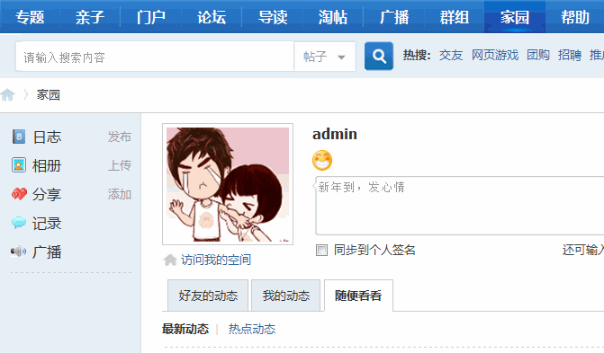以论坛模块风格展示效果如下：
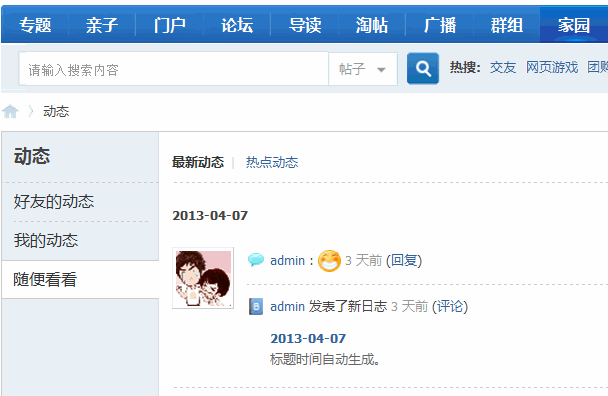3、个人主页默认皮肤
可以选择个性化 DIY 风格或者论坛样式。
4、二级导航显示方式
如果设置为显示所有主导航的二级导航，那么当鼠标移动到其他主导航文字上方的时候显示它们的二级导航
5、站点宽窄风格
设置站点的显示风格是宽版还是窄版，其中论坛的版块中还可以进行独立的设置，操作路径为：论坛 => 版块管理 => 扩展设置 => 本版块宽窄风格
同时还可以设置是否允许用户自由切换宽窄风格。
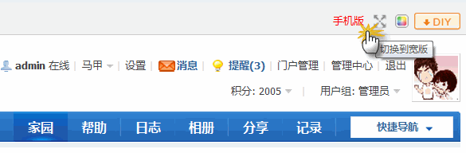6、启用浮动窗口
当用户有主题操作如发帖，回帖，或登录等操作的时候，显示快速的操作窗口。站长可以在这里开启自己需要的。
7、显示版块导航
开启后可以在快捷导航中显示版块导航。
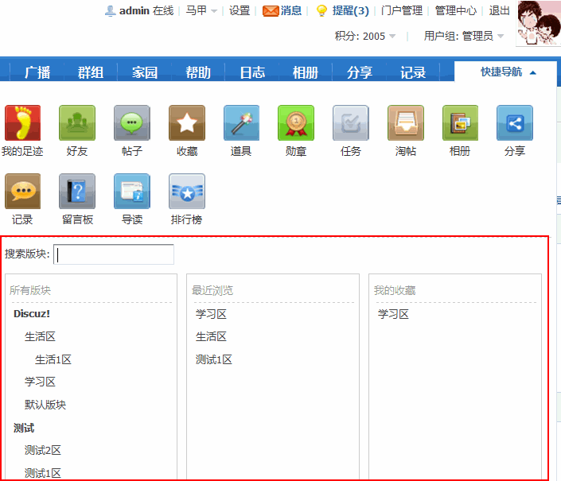8、积分变动提示
一个用户体验很好的变动提示，可以让用户在发生积分操作的时候将弹出提示信息告知用户，让用户有一个直观的认识。
9、显示用户名片
选择“是”当鼠标移动到用户名位置上时显示他的名片，效果如下
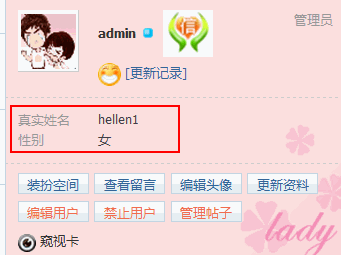10、匿名用户的昵称
设置帖子或评论留言中的匿名用户显示的文字。
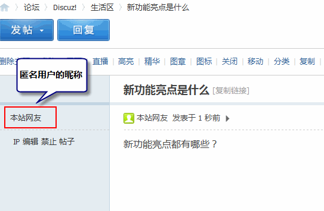二、论坛首页设置
1、论坛热点
用来控制是否显示全论坛的热点主题，同时还可以设置论坛热点显示数量、论坛热点的天数、论坛热点更新周期以及论坛热点内容截取文字长度
2、显示版块的下级子版块
选择“是”在论坛首页版块中显示下级子版块。
3、首页显示友情链接
选择“是”将在论坛首页显示友情链接。
4、显示边栏
显示论坛首页边栏的开关，选择“是”论坛首页侧边将显示聚合论坛内容的信息。
5、显示在线用户
根据自己的站点情况选择在论坛首页和论坛版块列表页显示在线会员列表。
6、缩略显示在线列表
如果打开该选项，在线列表将只显示在线用户数，不显示详情，如在线用户名，此时会员可手动打开在线用户列表(最大在线超过 500 人系统将自动缩略显示在线列表)
选择“是”的效果如下：
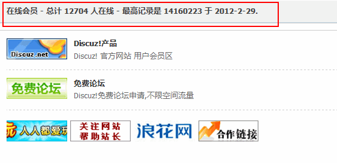7、最多显示在线人数
0为不限制，但只有在显示在线用户启用时才有效。
8、隐藏无权访问的版块
选择“是”将不在列表中显示当前用户无权访问的版块。
9、首页显示用户订阅的淘专辑数量
在首页显示用户订阅的淘专辑数量。
10、关闭顶部导航固定
当向上滚动屏幕时，主导航将即时出现在屏幕的顶部，效果如下：
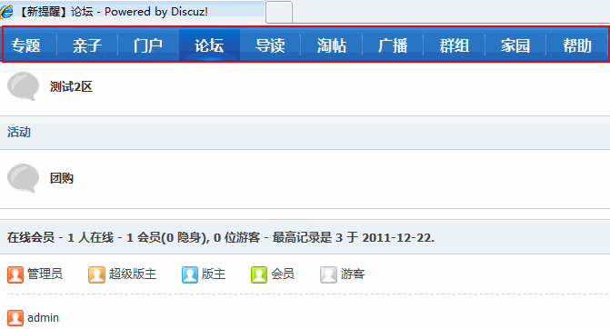三、主题列表页
1、每页显示主题数
主题列表中每页显示主题数目。
2、主题列表最大页数
主题列表中用户可以翻阅到的最大页数，建议设置为默认值 1000，或在不超过 2500 范围内取值，0 为不限制。
3、左侧版块导航宽度
设置左侧版块导航的宽度，设置为 0 或者版块开启了边栏时不显示此导航。
4、左侧版块默认展开
设置左侧版块导航是否默认全部展开，展开后的效果如下：
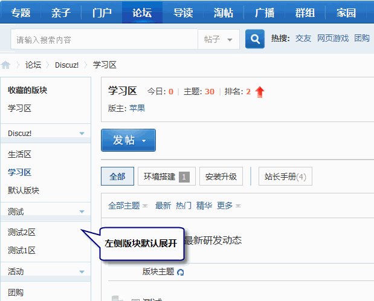5、启用全局置顶
选择“是”，置顶 III 的主题将在全部论坛显示，置顶 II 的主题将在当前分区中显示。注意: 本功能会加重服务器负担。
6、“新窗”是否默认勾选
选择“是”则默认情况下主题列表页主题链接在新窗口打开。
7、置顶主题的标识
以英文状态下的逗号分割，只有三项有效，级别依次为从高至低。
前台的效果：
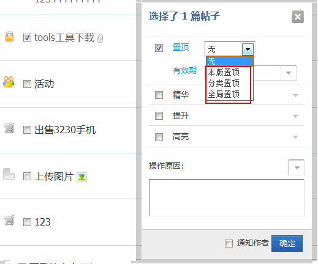8、显示主题列表分割带
选择“否”，在主题列表页将不显示置顶主题与普通主题之间的分割带(版块主题那一空行)
选择“是”在前台的显示效果
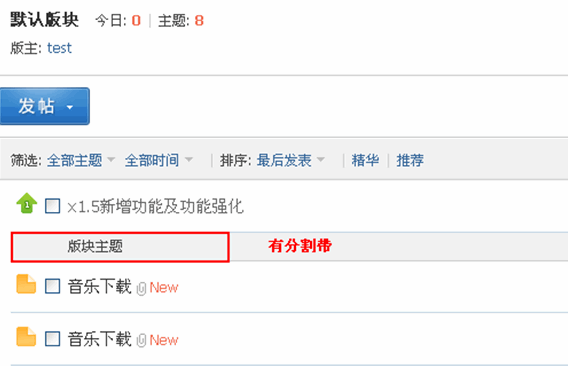选择“否”在前台的显示效果
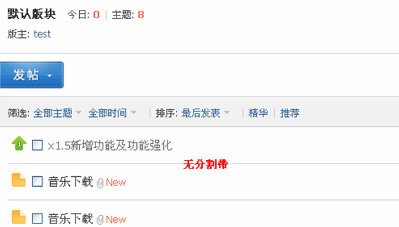9、显示最近访问版块数量
设置在版块列表和帖子浏览中显示最近访问过的版块数量，建议设置为 10 以内，0 为关闭此功能。
在前台的显示效果
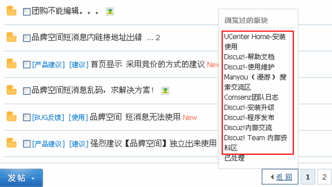10、快速发帖
浏览版块和帖子的时候底部显示快速发帖表单。
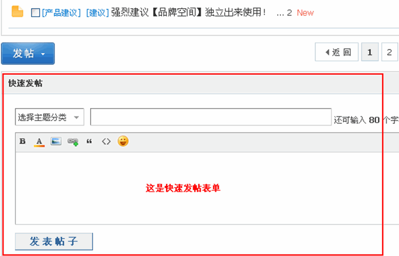11、显示推荐表情
在快速发帖右侧显示推荐表情。推荐的表情需要到“表情管理”中设置。
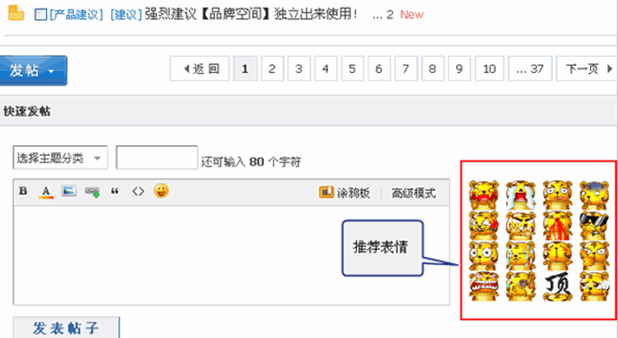12、主题封面宽度
当版块开启图片列表模式时有效，0或不填将使用默认值(214)，变更宽高建议重建主题封面，操作路径：后台 => 工具 => 更新统计 => 重建主题封面
13、封面图显示数量
当版块开启图片列表模式时有效，0或不填将和普通列表模式每页显示主题数一致。
14、新人帖图标
用户发第一篇主题时显示的图标，为空则不打图标。
在前台显示效果：
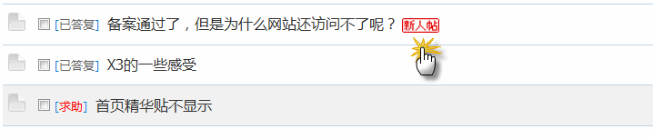15、关闭顶部导航固定
在访问主题列表页时，当向上滚动屏幕时，主导航将即时出现在屏幕的顶部。
16、关闭主题预览
关闭后将不可在主题列表页预览帖子内容，开启时在前台的显示效果：
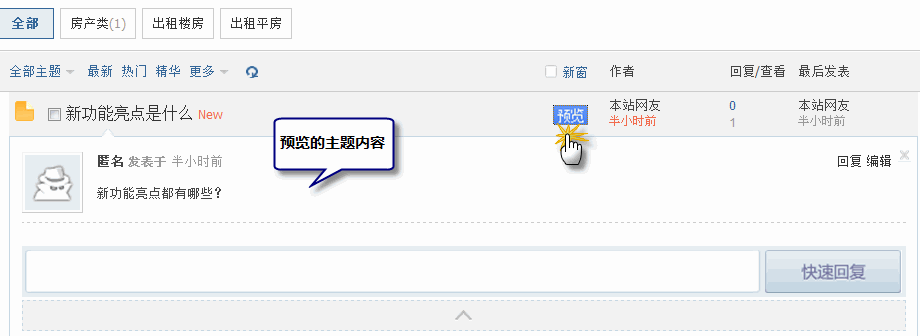四、帖子内容页
1、每页显示帖数
帖子列表中每页显示帖子数目。
2、星星升级阈值
星星数在达到此阈值(设为 N)时，N 个星星显示为 1 个月亮、N 个月亮显示为 1 个太阳。默认值为 2，如设为 0 则取消此项功能，始终以星星显示。
3、签名最大高度(px)
设置帖子中允许显示签名的最大高度。
4、签名显示条件
只有帖子字数大于指定数值后才显示签名。
5、是否在页面上显示评分理由
选择“否”就不在页面上显示评分理由，只保留评分数字。
选择“是”在页面上显示评分理由，效果如下图所示：
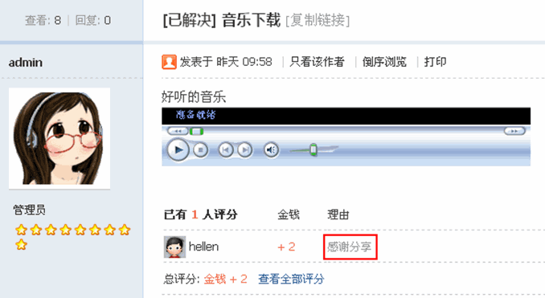6、评分条目数
在帖子中显示最近评分结果的条目数，0 为不显示。
7、相关淘专辑条目数
在主题帖中显示相关淘专辑的条目数，0 为不显示
8、相关帖子条目数
在主题帖中显示相关帖子的条目数，0 为不显示，在前台的显示效果：
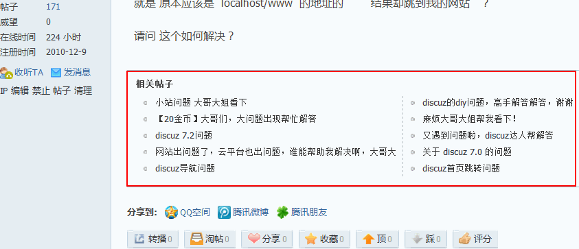9、相关帖子缓存时间
单位：分钟，在主题帖中显示相关帖子的缓存时间（0 为不缓存，不推荐）
10、是否显示作者签名
浏览作者帖子的时候是否显示作者的签名。
11、是否显示作者头像
选择“否”帖子中不显示作者的头像，效果如下图所示：
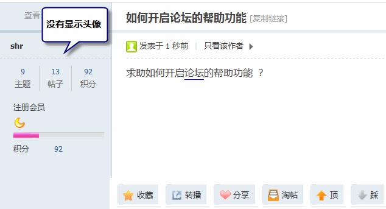12、是否显示帖内图片
选择“否”将不在帖子内显示上传的图片。
13、帖内图片最大宽度
当帖内图片宽度大于设置的值时图片宽度会被自动调节。
14、帖内图片列表中图片横排显示条件
设置当帖内图片列表中图片数量满足多少张以后以横排方式显示，0 或留空为关闭横排显示，在前台的显示效果：
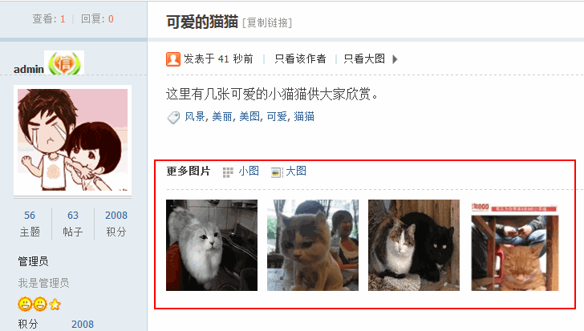15、是否使用图片动态放大效果
当帖内图片宽度大于“帖内图片最大宽度”时是否附加鼠标点击时的动态放大效果。选择“是”单击图片会有动态放大效果，选择“否”将会新窗口打开图片。
如果选择使用图片动态放大效果，可以选择图片附件是否显示 EXIF 信息，如果要显示 EXIF 信息，需要服务器配置 php.ini 支持 exif 库。
16、显示作者在线状态
是否显示帖子作者的在线状态，注意：“精确显示”会轻微加重服务器负担。
17、显示作者的组头衔
设置在帖子中是否显示作者的用户组头衔。
18、帖子顺序单位
设置帖子显示顺序编号的单位，如“#”将显示为 1 #
19、帖子顺序名称
设置每篇主题所有帖子的顺序名称，每行填写一个名称，第一行代表主题帖，第二行代表主题的第一个回复，以此类推。
20、最大单一表情解析次数
在一篇帖子中解析的同一个表情符号的最大次数，超过此次数限制的表情将不被解析而保留原样，以避免用户在一篇帖子中恶意发表大量表情影响正常阅读，0 为不限制。
21、作者用户名显示位置
显示位置并不会影响论坛的性能和美观，请根据你会员的浏览习惯进行选择。
22、关闭头像区域固定
当滚动屏幕时，左侧头像区域将跟随右侧帖子内容浮动，填充帖子内容区域很高时导致的左侧空白。
23、关闭顶部导航固定
在帖子内容页，当向上滚动屏幕时，主导航将即时出现在屏幕的顶部。
24、游客阅读简化模式
启用后，游客阅读主题时，将不显示用户的具体资料信息。
25、关闭左侧信息栏
帖子左侧用户信息栏是否默认关闭。
26、左侧信息栏允许用户控制
浏览主题时，用户是否可以控制左侧信息栏的显示状态
27、游客看小图
游客浏览主题时，帖内的图片将以指定大小的小图显示，可提高会员注册数和活跃量。
28、帖内游客登录提示
游客在浏览主题时，在主题的顶部显示提示文字。效果如下：
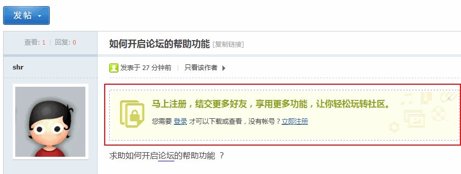29、主题内容生成图片宽度
本功能需要PHP支持GD库，内容里有中文需要将中文 TTF 字体文件放到 static/image/seccode/font/ch/ 目录下。默认100个汉字，字体不同宽度略有差别，请跟据实际效果调整。
30、开启帖子快速回复
开启后将在主题帖下方展示快速回复框，效果如下：
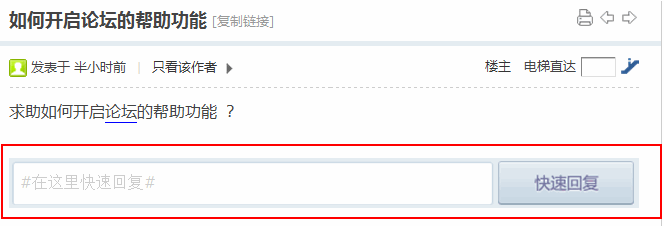31、开启帖子快速回复框背景
开启后允许给帖子快速回复框添加背景图片，图片可以自己上传，在前台的效果如下：
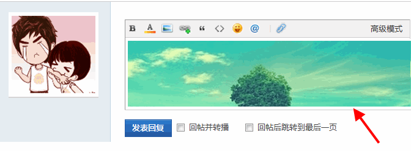五、帖内用户信息
这里主要设置帖内用户的信息显示方案，包括用户组方案设置和布局方案。
1、编辑默认方案
可以直接点击“编辑”进行布局方案设置。
名称：即方案的名称
左侧信息模板：指的是帖子内容页中，页面左侧显示的信息，您可以将鼠标放在本输入框中，然后直接点击显示的信息名称即可显示该信息。
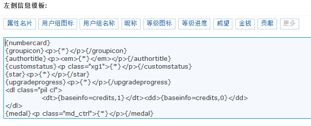头像菜单模板：可以设置帖子内容页中，头像菜单模板的显示信息。
2、添加新方案
可以按自己的要求设置方案名称、左侧信息模板和头像菜单模板，设置好以后可以在用户组方案设置中进行选择，不同的用户组可以用不同的显示方案。使站点显示用户信息更具个性化。
六、属性名片
可以设置用户头像下数字栏显示的用户资料项。
比如第1列显示主题数、第2列显示听众数、第三列显示总积分，效果如下：
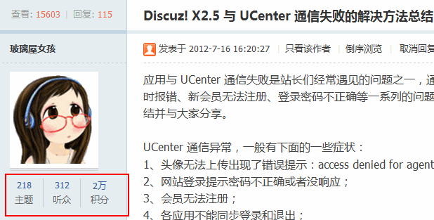您也可以根据自己的要求选择每一列显示不同的信息。
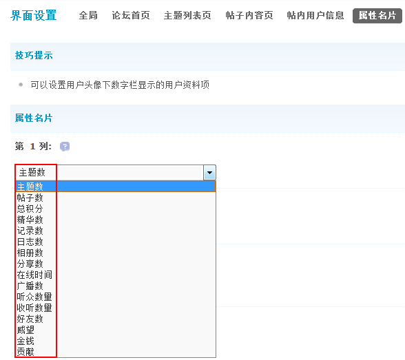七、提示信息
1、提示信息停留时间(秒)
各种提示信息页面显示时间的长短，一般设置为 1-3。较短的提示时间让用户拥有快速的体验，但是也可能让用户无法看清信息。
2、开启直接/快速跳转
对于站点中的某些成功的操作不显示提示信息，直接跳转到下一个页面，例如发帖，回复等等，可以节省用户等待跳转的时间。
3、直接/快速跳转的信息
当开启直接/快速跳转以后，以下信息将会直接跳转。每行填写一个信息的关键字。
下面列出了默认填写的关键字代码的涵义：
thread_poll_succeed => 你的投票成功提交，现在将转入主题页。
thread_rate_succeed => 感谢你的参与，现在将转入评分前页面。
usergroups_join_succeed => 你已加入用户组 {group} 用户组名称。
usergroups_exit_succeed => 你已退出用户组 {group}用户组名称。
usergroups_update_succeed => 公众用户组成功更新，现在将转入公众用户组设置。
buddy_update_succeed => 成功添加为好友。
post_edit_succeed => 你的帖子编辑成功，现在将转入主题页。
post_reply_succeed => 非常感谢，你的回复已经发布，现在将转入主题页。
post_edit_delete_succeed => 主题删除成功，现在将转入主题列表。
post_newthread_succeed => 非常感谢，你的主题已经发布，现在将转入主题页。
admin_succeed => 管理操作成功，现在将返回站点。
pm_delete_succeed => 短消息成功删除。
search_redirect => 搜索成功完成，现在将转入结果页面。
do_success => 进行的操作完成了。
八、弹出信息
我们经常在官网或者其它网站注册、登录、发帖、回复的时候会看到一些可爱有趣的小气泡，便是该功能可以实现的。
1、弹出信息停留时间(秒)
各种弹出信息显示时间的长短，一般设置为 3-10，0 为鼠标点击后消失。
2、注册页面
注册页面的弹出信息，每行填写一条信息，多条信息将随机显示。
3、登录页面
登录页面的弹出信息，每行填写一条信息，多条信息将随机显示。
4、发帖页面
发帖页面的弹出信息，每行填写一条信息，多条信息将随机显示。在前台的效果如下图所示：
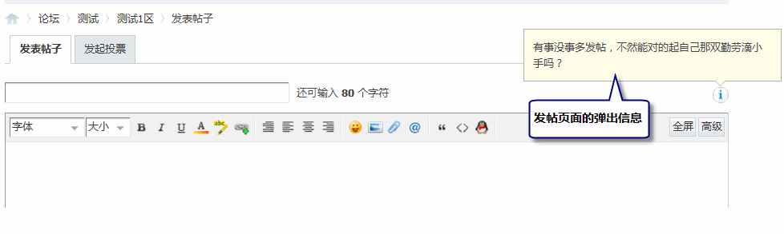5、回复页面
回复页面的弹出信息，每行填写一条信息，多条信息将随机显示。